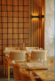

Mâncăruri Tradiționale
Specialitatea casei: mămăligă cu jumări preparată după rețete tradiționale românești cu ingrediente proaspete.
RESTAURANT

Specialitatea casei: mămăligă cu jumări preparată după rețete tradiționale românești cu ingrediente proaspete.

Un ambient plăcut și confortabil, perfect pentru mese în familie sau cu prietenii.
Organizăm nunți, botezuri și alte evenimente private într-un cadru de poveste.
Selecție de vinuri românești, țuică tradițională și băuturi artizanale.
Livrăm rapid preparatele noastre în tot orașul, ambalate cu grijă.
Lucrăm cu producători locali pentru cele mai proaspete ingrediente naturale.
La Poiana Verde, vă așteptăm cu cele mai delicioase preparate românești, gătite cu pasiune și dedicație. Restaurantul nostru oferă o atmosferă caldă și primitoare, perfectă pentru orice ocazie specială.